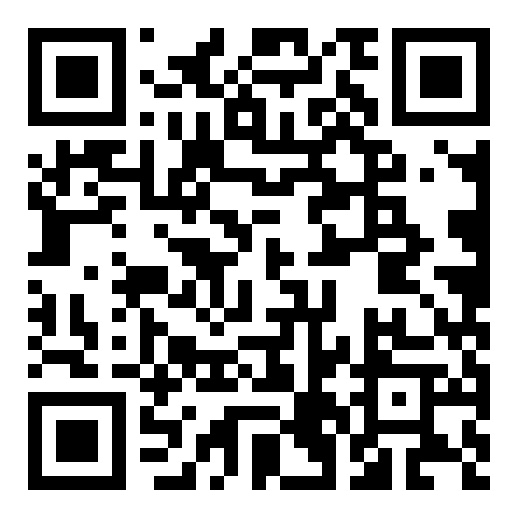

Shuestand
Bitcoin ↔ Cashu einfach tauschen, direkt im Browser, ohne App-Installation.

Jetzt ausprobieren:
https://shuestand.mountainlake.io/
Shuestand ist ein einfacher Kiosk für den schnellen Wechsel zwischen On-Chain-Bitcoin und Cashu eCash. Ideal für Demos, Events und erste Schritte.